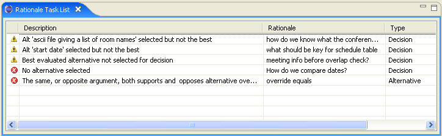

The following errors and warnings are detected and reported by
SEURAT:
• Error: No alternative is selected for a decision.
• Error: A requirement is violated.
• Error: A tradeoff is contradicted by having normally opposing arguments on the same side of the argument.
• Error: A co-occurrence is contradicted by having items appearing on opposing sides of the argument rather than together.
• Error: An alternative pre-supposes another alternative that is not selected.
• Error: An alternative is opposed by another alternative that is selected.
• Error: An alternative is selected that has arguments opposing it but none supporting it.
• Error: An alternative has contradictory arguments (the same, or similar, argument before and against).
• Error: More than one alternative has been selected for a decision when only one is allowed.
• Error: A decision requires sub-decisions to be decided and the sub-decisions are missing.
• Warning: The alternative selected is not as well supported as other choices.
• Warning: The alternative selected has no arguments supporting it.
• Warning: A tradeoff is violated by missing an element
• Warning: A co-occurrence is violated by missing an element.
• Warning: A question has not been answered.
• Warning: An alternative has duplicate arguments.